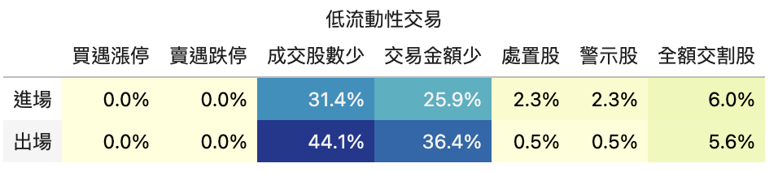
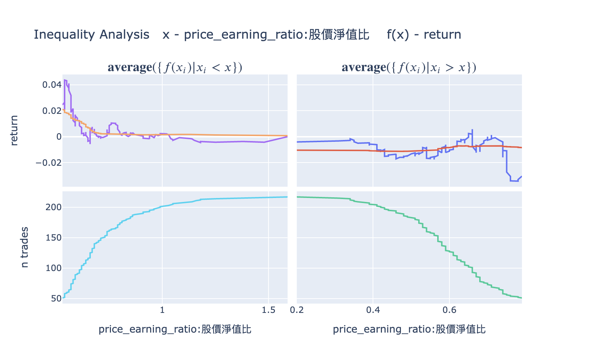
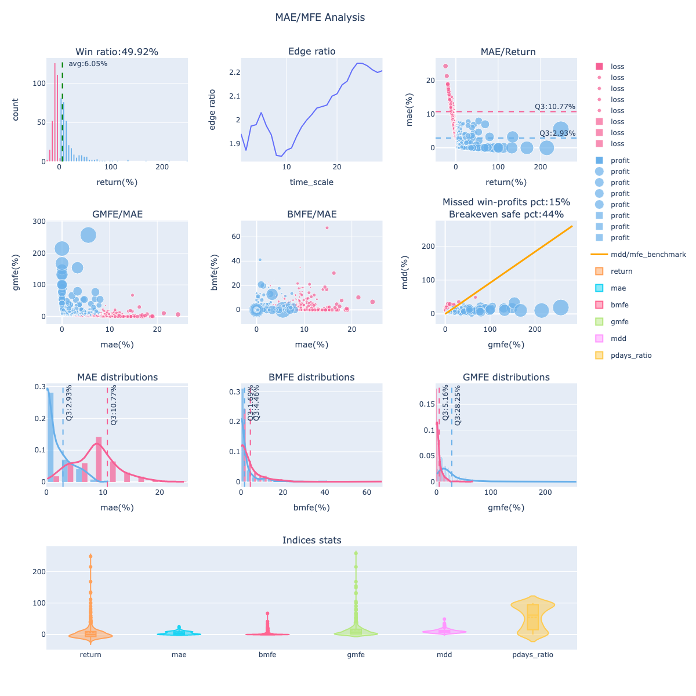

finlab.analysis
finlab.analysis.liquidityAnalysis.LiquidityAnalysis(required_volume=200000, required_turnover=1000000)
Bases: Analysis
Analyze liquidity of TW Stocks
Parameters:
| Name | Type | Description | Default |
|---|---|---|---|
required_volume |
int
|
mininum volume |
200000
|
required_turnover |
int
|
mininum turnover |
1000000
|
Examples:
# better syntax
report.run_analysis('LiquidityAnalysis', required_volume=100000)
# original syntax
from finlab.analysis.liquidityAnalysis import LiquidityAnalysis
report.run_analysis(LiquidityAnalysis(required_volume=100000))

finlab.analysis.inequalityAnalysis.InequalityAnalysis(name, df=None, date_type='entry_sig_date', target='return')
Bases: Analysis
Analyze return of trades with condition inequality
Parameters:
| Name | Type | Description | Default |
|---|---|---|---|
name |
str
|
name of the condition |
required |
df |
pd.DataFrame or None
|
value used in condition. If df is None, |
None
|
date_type |
str
|
can be either |
'entry_sig_date'
|
target |
str
|
the target to optimize. Any column name in report.get_trades() |
'return'
|
Examples:

假如希望開發交易分析系統，可以繼承 finlab.analysis.Analysis 來實做分析。
finlab.analysis.Analysis
Bases: ABC
analyze(report)
Analyze trading report.
One could assume self.caluclate_trade_info will be executed before self.analyze,
so the report.get_trades() will contain the required trade info.
calculate_trade_info(report)
staticmethod
Additional trade info can be calculated easily.
User could override this function if additional trade info is required for later anlaysis.
Examples:
from finlab.analysis import Analysis
class SomeAnalysis(Analysis):
def calculate_trade_info(self, report):
return [
['股價淨值比', data.get('price_earning_ratio:股價淨值比'), 'entry_sig_date']
]
report.run_analysis(SomeAnalysis())
trades = report.get_trades()
assert '股價淨值比@entry_sig_date' in trades.columns
print(trades)
display()
Display result
When implement this function, returning Plotly figure instance is recommended.
is_market_info_supported(market_info)
Check if market info is supported
Returns:
| Type | Description |
|---|---|
bool
|
True, support. False not support. |
finlab.analysis.Report(creturn, position, fee_ratio, tax_ratio, trade_at, next_trading_date, market_info)
Bases: ReportPyx
策略回測基礎報告
Parameters:
| Name | Type | Description | Default |
|---|---|---|---|
creturn |
pd.Series
|
策略報酬率時間序列。 |
required |
position |
pd.DataFrame
|
策略報酬率時間序列。 |
required |
fee_ratio |
float
|
交易手續費率，預設為台灣無打折手續費 0.001425。可視個人使用的券商優惠調整費率。 |
required |
tax_ratio |
float
|
交易稅率，預設為台灣普通股一般交易交易稅率 0.003。若交易策略的標的皆為 ETF，記得設成 0.001。 |
required |
trade_at |
str
|
選擇回測之還原股價以收盤價或開盤價計算，預設為 close。可選 close 或 open。 |
required |
next_trading_date |
str
|
預期下期換股日。 |
required |
market_info |
str or class(finlab.market_info.MarketInfo)
|
可選擇 |
required |
Attributes:
| Name | Type | Description |
|---|---|---|
benchmark |
pd.Series
|
對標報酬率曲線的時間序列，用於 Report.display() 顯示策略報酬率比較標準。 |
update_date |
str
|
用於 Report.display() 顯示策略對標的報酬率曲線。 |
asset_type |
str
|
資產類別， tw_stock 或 crypto。 |
last_trading_date |
str
|
最近產生交易訊號的日期。 |
display()

display_mae_mfe_analysis(violinmode='group', mfe_scatter_x='mae', **kwargs)
顯示波動分析圖組
Parameters:
| Name | Type | Description | Default |
|---|---|---|---|
violinmode |
str
|
violin 型態統計圖樣式，模式分為 group 與 overlay。 預設為 group，group 模式為將交易勝敗分群統計'，overlay 採取全數統計。 |
'group'
|
mfe_scatter_x |
str
|
子圖 2-1、2-2 MFE 散點圖的X軸比較項目設定，可選 |
'mae'
|
**kwargs |
dict
|
其餘圖表外觀(layout)參數。 |
{}
|
Returns:
| Type | Description |
|---|---|
plotly.graph_objects.Figure
|
波動分析圖組 |
Examples:
group :

overlay : 
get_mae_mfe()
取得 mae_mfe 時序資料
Returns:
| Type | Description |
|---|---|
pd.DataFrame
|
波動時序資料 |
get_stats(resample='1d', riskfree_rate=0.02)
取得策略統計數據 取得數據如夏普率、索提諾比率、最大回檔、近期報酬率統計...
Parameters:
| Name | Type | Description | Default |
|---|---|---|---|
resample |
str
|
報酬率檢測週期，其他常用數值為 W、 M 、Q（每週、每月、每季換股）。 |
'1d'
|
riskfree_rate |
float
|
無風險利率。 |
0.02
|
Returns:
| Type | Description |
|---|---|
dict
|
策略指標數據。 |
get_trades()
取得回測逐筆交易紀錄
重點欄位說明
- exit_sig_date:進場訊號產生日。
- entry_sig_date:出場訊號產生日。
- entry_date:進場日。
- exit_date:出場日。
- position:持有佔比。
- period:持有天數。
- return:報酬率。
- trade_price@entry_date:進場價。
- trade_price@exit_date:出場價。
- mae:持有期間最大不利報酬率幅度。
- gmfe:持有期間最大有利報酬率幅度。
- bmfe:mae發生前的最大有利報酬率幅度。
- mdd:持有期間最大回撤。
- pdays:處於獲利時的天數。
- entry_volatility@entry_sig_date: 進場訊號產生日的股價真實波動率。
Returns:
| Type | Description |
|---|---|
pd.DataFrame
|
交易紀錄 |
position_info()
取得近期持有部位與預期換股資訊
Returns:
| Type | Description |
|---|---|
dict
|
部位資訊 |
run_analysis(analysis, display=True, **kwargs)
執行策略分析外掛模組
Parameters:
| Name | Type | Description | Default |
|---|---|---|---|
analysis |
str or object
|
|
required |
display |
bool
|
是否顯示模組分析圖表。 |
True
|
**kwargs |
mapping
|
分析模組參數調整。 |
{}
|
Returns:
| Type | Description |
|---|---|
pd.DataFrame or plotly.graph_objects.Figure
|
分析結果 |
upload(name=None)
上傳回測報告資料到量化平台網站
Parameters:
| Name | Type | Description | Default |
|---|---|---|---|
name |
str
|
策略名稱。 |
None
|